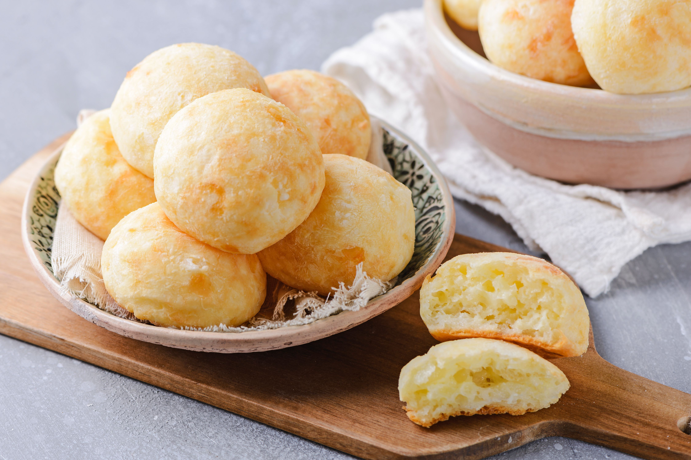

Pao de queijo


History
With origins dated around the XVII century, Pao de queijo
(english: cheese bread) has it's origin in a state of
Brazil, Minas Gerais. It is
speculated that this recipe was made to serve as a easy meal to
make and cheap on cost. With time it gained extreme popularity
Ingredients
- 1/2 cup olive oil
- 1/3 cup water
- 1/3 cup milk
- 1 teaspoon salt
- 2 cups tapioca flour
- 2 teaspoons minced garlic
- 2/3 cup freshly grated Parmesan cheese
- 2 beaten eggs
Order of preparation
- Preheat Oven 375 F
- Mix the oil, water, milk and sat
- Stir in tapioca flour and garlic. Let rest for 10-15 min
- Stir cheese and ehhs into mixture until combined
- Drop dought 1/4 cup-size balls onto ungreased baking sheet
- Bake for 15-20 min